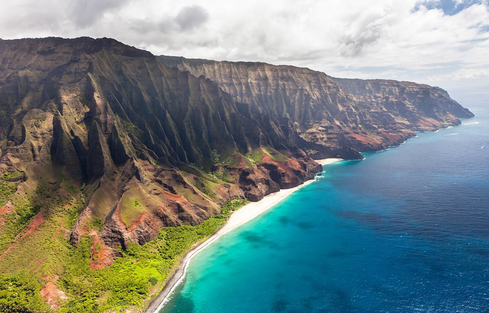
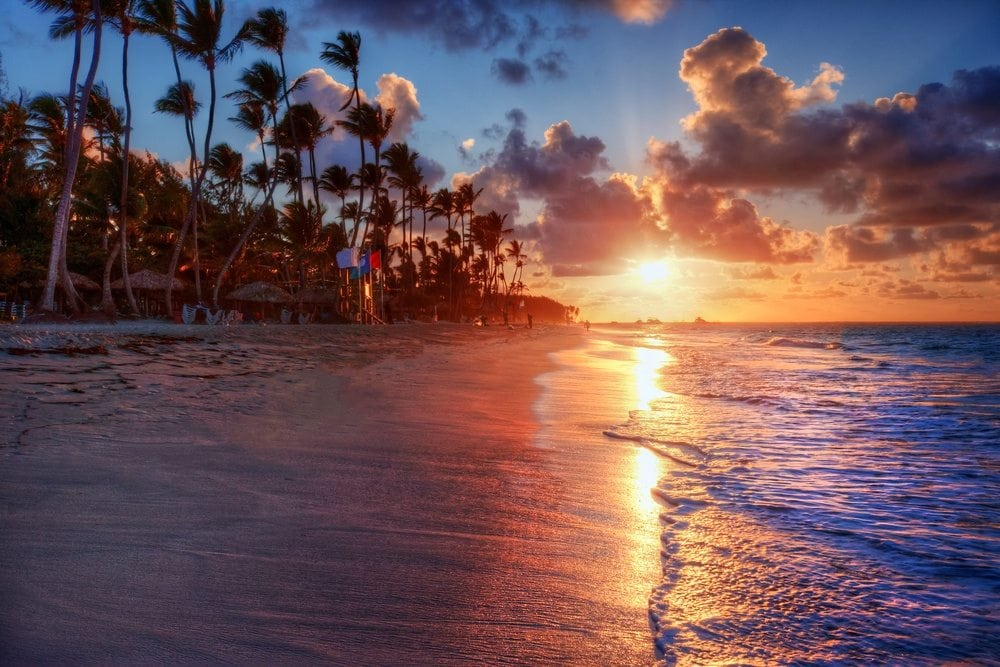

Hawaï :
Hawaï est un État de l'ouest des États-Unis, situé à environ 3 200 km du continent américain dans l'océan Pacifique. C'est le seul État américain situé en dehors de l'Amérique du Nord, le seul État qui soit un archipel et le seul État situé sous les tropiques. Hawaï comprend la quasi-totalité de l'archipel hawaïen, 137 îles volcaniques s'étendant sur 2 400 km. La côte océanique de l'État est par conséquent la quatrième plus longue des États-Unis, avec environ 1 210 km. Les huit îles principales, du nord-ouest au sud-est, sont Niʻihau, Kauaʻi, Oʻahu, Molokaʻi, Lānaʻi, Kahoʻolawe, Maui et Hawaiʻi. Cette dernière, qui a donné son nom à l'État, est souvent appelée "Big Island" ou "Hawaii Island" pour éviter toute confusion avec l'État ou l'archipel. Les îles inhabitées du nord-ouest d'Hawaï constituent la majeure partie du Papahānaumokuākea Marine National Monument, la plus grande zone protégée des États-Unis et la quatrième au monde.

Principales îles de l'archiepl d'Hawaï:
| Nom de l'île | Superficie | Nombre d'habitants |
|---|---|---|
| Kauai | 1 430 km2 | 65 689 |
| Oahu | 1 545km2 | 976 372 |
| Molokai | 673.4 km2 | 7 404 |
| Lanai | 365 km2 | 3 332 |
| Maui | 1 902km2 | 164 221 |
| L'île d'Hawaï | 28 311km2 | 1 442 000 |
plus d'infos sur Wikipedia